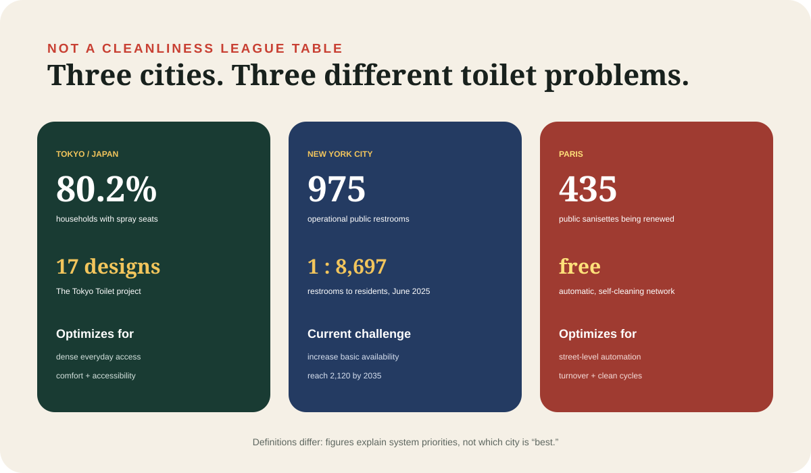
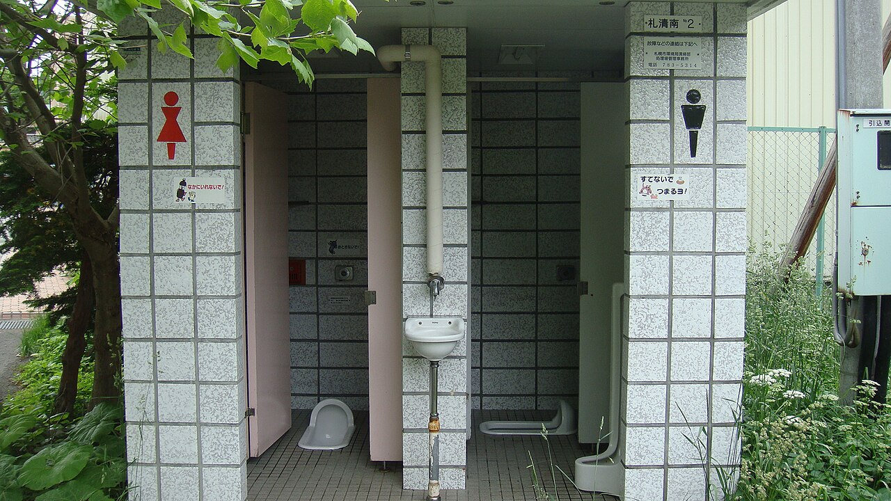

Japan with
Japan with

You step off a train in Japan, follow a blue-and-red pictogram, and find a room you do not need a coin, code or purchase to enter. The seat may be warm. A panel offers a wash, pressure control, stop button and sometimes a privacy sound. There may be a child seat, ostomate sink, changing board or rail. The most surprising part is not any one feature. It is that the room exists exactly when an ordinary day needs it.
That experience has made the Japanese toilet a global shorthand for the future. Yet “Japanese toilets are amazing; foreign toilets are terrible” is lazy comparison. Countries inherit different buildings, pipes, laws, street patterns, vandalism risks and budgets. Paris built a vast self-cleaning street network. New York is trying to fix basic scarcity. Japan combined private bathroom technology with unusually visible public access. The interesting question is not who wins. It is what each system decided a toilet should do.
The famous seat began with awkward research
TOTO launched the Washlet in 1980, but the product was not simply a bidet with electricity. Engineers had to discover where water should go, at what angle and temperature. The company’s technical history describes using measurements from roughly 300 employees. Reference settings—about 43 degrees for the nozzle, 38°C water, 36°C seat and 50°C drying air—turned a potentially alarming machine into a predictable domestic object.
The category improved through small reductions in anxiety: a self-cleaning nozzle in 1983, slimmer tankless designs, deodorizing, automatic lids and a stop control. By March 2020, a Cabinet Office survey cited by TOTO put spray-seat ownership at 80.2 percent of Japanese households. TOTO says cumulative Washlet sales reached 70 million in 2025. Those are company and household figures, not proof that every public cubicle is electronic. They show how an exotic luxury became ordinary infrastructure.
Sound reveals the culture around the machine
One strange button does not wash anything. TOTO introduced Otohime—the “Sound Princess”—in 1988 after research found women repeatedly flushing to hide bodily sounds. A simulated flush preserved privacy while reducing water use. For an office with 400 women, TOTO estimates the device can save 3.39 million liters a year. The exact result depends on use, but the insight is broader: embarrassment was consuming water, so the fixture changed the situation instead of lecturing users.
Competing manufacturers once used different symbols, leaving visitors afraid one wrong press might produce a surprise. In 2017, the Japan Sanitary Equipment Industry Association standardized eight control pictograms, including flush, stop, rear wash and bidet. Technology had created an interface problem; standardization made it usable.
The seat is only one layer
A magnificent toilet that cannot be found is useless. In Japanese cities, restrooms are woven into stations, department stores, parks, museums, municipal buildings and highway service areas. Access is often free and pictograms prominent. This density is hard to quantify nationally because facilities have different owners and hours. It is a network assembled from many obligations and customs, not one central service.
Accessibility law has pushed that network forward. Japan’s Barrier-Free Act took effect in 2006, and revised standards for accessible toilets came into force in June 2025. Larger rooms increasingly include grab bars, changing beds and ostomate equipment. Yet concentrating every function in one “multipurpose” room can create queues, so newer guidance encourages distributing equipment where practical.
The Tokyo Toilet project makes maintenance visible. Seventeen public restrooms in Shibuya were redesigned by 16 creators, from Tadao Ando to Kengo Kuma, so anyone could use them regardless of gender, age or disability. Every site includes at least one private universal toilet. Architecture attracted cameras, but the brief is explicit: cleaning and maintenance determine whether a beautiful room remains trusted. Shibuya City now manages the network.

New York’s problem is finding one
New York City shows why hardware is not the first question everywhere. Its Independent Budget Office counted 975 operational public restrooms in June 2025 for 8.48 million residents: one for every 8,697 people. Availability changes with construction, maintenance, park hours and seasonal closures. A heated seat cannot solve a missing room.
Local Law 58 of 2025 requires a long-range strategy, and the City Council describes a target of at least 2,120 public restrooms by 2035. The useful comparison with Tokyo is not “clean versus dirty.” It is abundance versus scarcity. Japan’s stations and businesses function as part of the public-access mesh. New York’s official count shows what happens when that mesh is thin and fragmented.
Paris put the cleaning cycle in the machine
Paris chose another model: the street-level sanisette. The city is renewing 435 free public toilets, with 400 automated units that wash the bowl and floor between uses. Automation offers consistent turnover and lowers the staffing burden; newer units extend hours and improve accessibility. The trade-off is a reset cycle, a clinical enclosure and dependence on a specialized machine.
Japan’s typical station or mall restroom is different. Cleaning is visible human labor; attendants, managers and users collectively sustain the room. That can respond flexibly, but quality varies with staff and budgets. Paris mechanizes the clean-room interval. Japan embeds the toilet in a supervised building. Both are systems. Neither is a magic bowl.
The postcard version leaves things out

Not every Japanese restroom is futuristic, spotless or open. Older parks and stations may still have squat toilets. Small businesses may reserve toilets for customers. Soap, warm water, paper towels and dryers are not equally available. A spotless electronic seat can sit five minutes from an aging cubicle. People with wheelchairs, children, luggage or invisible disabilities may still queue for the only larger room.
Disasters reveal a deeper weakness. A sophisticated toilet depends on electricity, water, sewers and cleaning supplies. After earthquakes or floods, waste management rapidly becomes a health and dignity problem. Japan’s planning includes portable and manhole toilets, but the contrast is sobering: the world’s most advanced seat is powerless when the system below it fails.
Nor did Japan invent washing with water. Bidets, lotas and shattafs have long histories across Europe, the Middle East and South Asia. Japan’s achievement was integrating water, warmth, electronics, standardized interfaces and mass manufacturing into the seat, then placing versions throughout daily life.
A visitor’s 60-second operating guide
Look for toilet, WC, お手洗い or 化粧室. On older squat toilets, face the raised hood. On an electronic seat, sit before testing controls; a sensor usually prevents accidental spraying. The privacy-sound button does not flush. If no flush is obvious, stand and look behind the lid or on the wall.
Then notice the unglamorous things: hooks for bags, a shelf for a phone, child restraints, sign contrast and a cleaner’s checklist. These explain more than the number of buttons. Japan’s toilet feels advanced because engineers, regulators, owners, attendants and users have repeatedly treated a few private minutes as part of public life.
A great toilet is not a throne. It is a quiet agreement that nobody should plan an entire day around finding, entering or understanding one.
That agreement is incomplete in Japan, as everywhere. But it is why the toilets deserve attention—and why copying the Washlet without copying access, maintenance and inclusive design copies only the photogenic layer.
Continue into everyday infrastructure: why Japan’s convenience stores really sell time.
Sources and limits
- TOTO — Washlet anniversary and household adoption (2020)
- TOTO — technical development history
- TOTO — Otohime and water estimate
- Japan Sanitary Equipment Industry Association — pictograms
- MLIT — barrier-free standards
- The Tokyo Toilet — locations and purpose
- NYC Independent Budget Office — access report
- New York City Council — restroom strategy
- City of Paris — sanisette modernization
Household adoption and sales are manufacturer figures tied to cited research; they do not measure every public restroom. City counts use different definitions and cannot be a cleanliness ranking. Conditions vary by location and maintenance cycle. No organization paid for inclusion.